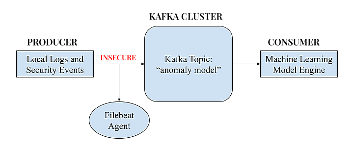
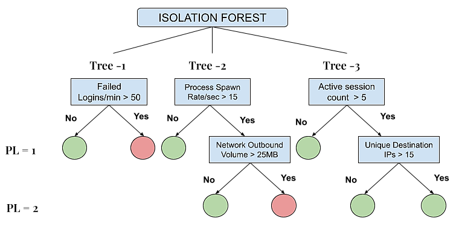
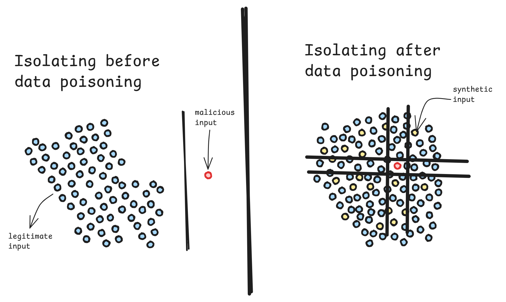

Description: Inside-out Poisoning: Desensitizing Anomaly Detection Models via Unauthenticated Internal Kafka Streams
Concepts: adversarial-ml data-poisoning kafka isolation-forest
In recent years, Machine Learning has become fundamental to the automation of cybersecurity frameworks, with modelling serving as the essential backbone of AI automation. We have transitioned from archaic rule-based detection to the development of Anomaly Detection Models powered by traditional ML and deep learning. As threat actors increasingly leverage AI to enhance their adaptability, it is vital for security infrastructures to evolve into adaptable defense mechanisms, leading to the rise of model-based anomaly detection.
The efficacy of any model is linked to the quality of its training data; consequently, any manipulation of this data inevitably compromises the model's integrity. This vulnerability is further reinforced by the current shift toward adaptive models that learn from real-time user data. This trend introduces a significant security flaw by granting users influence over the very data the model utilizes for training. This specific loophole facilitates the process of desensitization.
Data Poisoning is a subset of Adversarial Machine Learning. There's a specific type of data poisoning that's at play here: Boiling Frog Attack which is when it runs under the assumption that the anomaly detection model undergoes Unsupervised Streaming, Incremental Learning or Automated Periodic Retraining. The common ground for all this? Any raw input data becomes training data. By slowly polluting this stream, the attacker rewires the security system's baseline from the inside out.
The core concept of this exploit pipeline is manipulating the logs to rewire a security system's response to suspicious activity.
Let's go through each step that makes this exploit possible and further, prevention strategies to thus, adapt.
Let's assume an internal pentester, under the contract, has gained a low-level foothold on a corporate workstation. To feed an active anomaly model, enterprise networks employ high-throughput, distributed event-streaming platforms like Apache Kafka to act as a central data highway. Localized collection daemons (e.g. Winlogbeat, Filebeat, or Splunk forwarders) watch host events and ship raw records to the Kafka cluster. The cluster buffers and sorts these logs into specific Topics (such as win-auth-logs), which the central machine learning engine continuously subscribes to for live scoring and data lake ingestion.

The structural flaw manifests when developers treat the internal network as an implicit trust zone, failing to enforce Access Control Lists (ACLs) or authentication on the Kafka brokers. By auditing localized agent configuration files on the compromised workstation, an attacker can map the log-shipping topology. This is done by inspecting the primary configuration file, generally located at C:\Program Files\Filebeat\filebeat.yml which reveals exactly how host telemetry is formatted and where it is sent.
Reviewing standard setup parameters displays the stark divergence between a locked-down operational deployment and an environments configuration file layout exposing an unauthenticated ingestion zone.
# NON-VULNERABLE CONFIGURATION
filebeat.inputs:
- type: filestream
id: win-security-logs
paths:
- C:\Windows\System32\Winevt\Logs\Security.evtx
output.kafka:
hosts: ["kafka-secure.bank.internal:9093"]
topic: "anomaly-model"
# THE AUTHENTICATION LOCK
username: "workstation_log_shipper"
password: "${local.KAFKA_MODEL_PIPELINE_PASS}"
sasl.mechanism: "SCRAM-SHA-512"
ssl.enabled: true
ssl.verification_mode: "full"
ssl.certificate_authorities:["C:\Program Files\Filebeat\certs\
bank-root-ca.pem"]# VULNERABLE CONFIGURATION
filebeat.inputs:
- type: filestream
id: win-security-logs
paths:
- C:\Windows\System32\Winevt\Logs\Security.evtx
- C:\Apps\AuthenticationProvider\logs\login_attempts.log
output.kafka:
hosts: ["192.168.10.25:9092"]
topic: "anomaly-model"
# Missing authentication, authorization, and TLS encryption
This vulnerable design of the log-to-apache kafka pipeline is the gateway for us to inject synthetic logs that can manipulate the anomaly model.
Isolation Forests are frequently utilized as the core algorithm for anomaly detection. They are an unsupervised group of random decision trees that split data points based on feature dimensions. For an easier explanation on how they are exploited, we will use a far simpler Isolation Forest comprising only three decision trees.

The red circles represent anomaly cases and will thus be flagged if the model detects them within the logs or its input data. Because anomalies are statistically rare and structurally distinct, they isolate rapidly during random partitioning. This can be observed in the minimal Path Length [PL] $(h(x))$ , terminating immediately near the root node while normal data points require deep, highly branched paths to be isolated.
The anomaly score $s(x,n)$ for an operational sample $x$ within a dataset size of $n$ is derived using the following core formula:
Interpretation: Scores closer to 1 indicate anomalies, while scores below 0.5 indicate normal points.
An attacker can exploit this mathematical dependency by deploying a lightweight Python script leveraging the kafka-python library.
# Exploit Script
from kafka import KafkaProducer
import json
import random
producer = KafkaProducer(
bootstrap_servers=['192.168.10.25:9092'],
value_serializer=lambda v: json.dumps(v).encode('utf-8')
)
# Injecting continuous, synthetic "gray noise" to distort feature boundaries
for i in range(10000):
fake_log = {
"failed_logins": random.randint(1, 3),
"active_sessions": random.randint(1, 2),
"network_volume_mb": random.uniform(0.5, 2.0)
}
producer.send('anomaly-model', value=fake_log)
By streaming thousands of low-volume, synthetic events directly into the open Kafka topic, it results in increasing of the path length $[h(x)]$. In simple words, we are feeding the model with unnecessary traffic to make our attack point a needle in a stack of hay: thus, 'hiding' it and normalizing it. This could be understood better when we shift from a tree based approach of isolation forests into a geometric translation of the feature space.

As the number of lines to isolate a data point increase, it's synchronous to the increment of path length in our flowchart example, thus making the model shift closer to 0, malicious passing as normal input.
When the algorithm performs its next automated retraining, it ingests this corrupted data store. The random decision trees are forced to build deeper, more erratic partitions just to handle the artificial noise density. The model absorbs this injected variance, stretching its definition of "normal" and causing true anomalies to fall below the classification threshold.
Consequently, when the attacker executes their actual high-severity objective (such as conducting lateral privilege escalation), the modified decision trees require a significantly higher number of splits to isolate the malicious data point. The average path length $E(h(x))$ remains long, driving the mathematical anomaly score safely below 0.5.
For the mathematics side of the model exploit, click below:Machine learning models have advanced incident response speed, but they are not magical entities; they are highly deterministic algorithms built on top of traditional data engineering infrastructure. If the pipeline feeding the model treats internal network traffic as inherently trustworthy, it hands an internal threat actor full administrative control over the model's training boundaries.
Thank you for reading.
— EXIT —